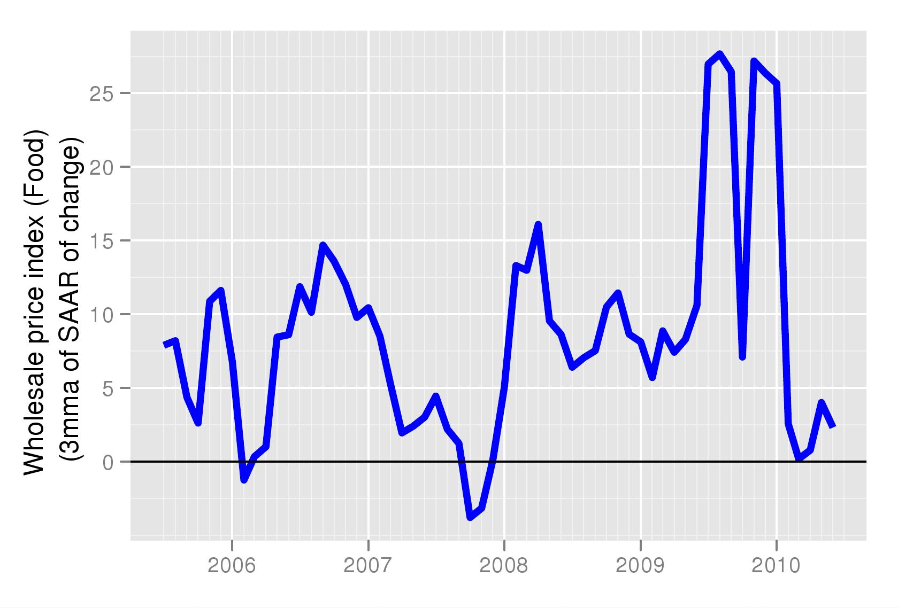
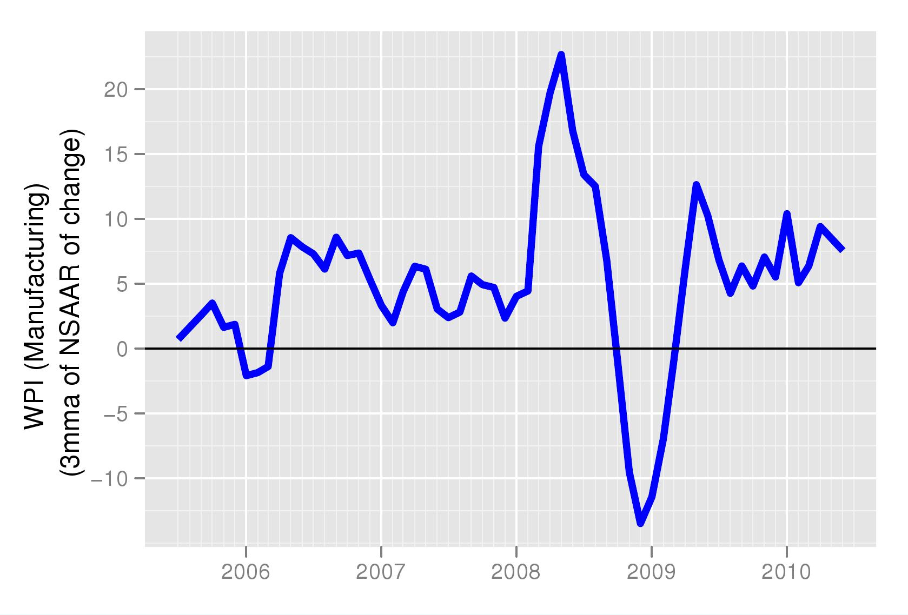
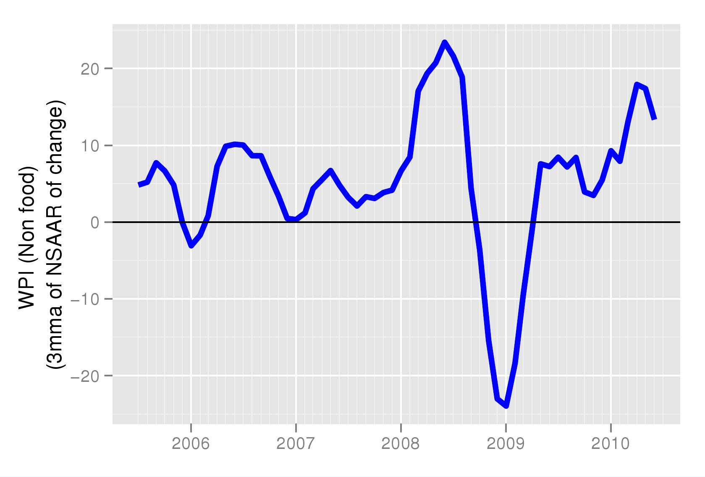
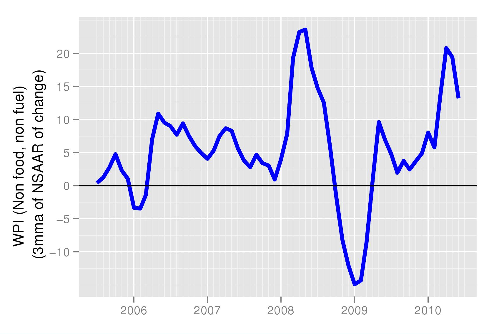

Food for thought
Financial Express, 28 August 2010
Food inflation has come down in recent weeks. In the coming months it will continue to show a further decline. The concern today is not rising food inflation, or even fuel inflation, a result of fuel price hike by the goverment, but of rising non-food, non-fuel inflation. There can be a number of reasons for this. One, the rise in food prices last year has pushed up cost of living and wages today are higher than they were a year ago. Higher wage costs have pushed up the cost of production. Second, the depreciation of the rupee witnessed after the financial crisis has raised prices of tradables, often raw material inputs. As long as this was seen as a temporary effect, prices were not raised. However, since the depreciation did not reverse, higher prices of tradables were seen as the new equilibrium and prices of output went up. Third, inflationary expectations have risen. The large fiscal deficit has pushed up demand. Speeches by the RBI Governor suggesting that inflation control is not the dharma of RBI have unhinged inflationary expectations. Higher inflationary expectations feed into higher prices and wages.
Figure 1 shows a graph of the month on month (seasonally adjusted) food prices. It shows that food prices are now rising at below a 5 percent annualised growth rate. This (and the following) graphs prepared afresh every week by NIPFP are based on an analysis of seasonally adjusted data and can be found at http://www.mayin.org/cycle.in/tracking.html. The figure shows that there was a sharp spike in food prices in 2009 but that this problem is now under control. Most of the statements by government appear to have been based on this fact. For a long time food price inflation was the biggest component of inflation. Sugar prices contributed the sharpest spike. When food price inflation started coming down it was assumed that inflation would soon be under control.
The problem that was not foreseen was that even after food price inflation had come down, there would be a second round effect and other factors such as the rupee depreciation that would push prices of non-food items up. In addition, the increase in demand spurred by the increase in fiscal deficit and the pick up in growth which pulled the economy out of the recession happened faster and more than expected. A combination of these factors was enough to start pushing up prices in manufacturing by mid 2009. As in seen in Figure 2 manufacturing inflation on a month on month basis, measured by WPI-Manufacturing, has been fluctuating between 5-10 precent for most of the last 12 months.

Non-food inflation measured by WPI-ALL minus WPI-Food as well as prices of food products normally included in WPI-Manufacturing, shows a sharp increase especially since early 2010 when it has risen above 10 percent (Figure 3). That this phenomenon is not driven by the fuel price hike can be seen in Figure 4 which shows that non-food, non-fuel WPI has actually risen above the levels of the non-food inflation of WPI, and gone upto as high as 20 percent on the month on month basis. Given that this inflation will slowly creep into the year on year inflation, the next few months are going to see an increase in the year on year growth rate of non-food, non-fuel inflation.
Non-food, non-fuel inflation is often watched by analysts as a measure of core inflation that predicts headline numbers. Rising figure of this measure are likely to push up inflationary expectations. Today, even though growth rates in industrial production remain low, if inflationary expectations are high, they can continue to push up costs of production. The goverment and RBI need to step in with vigour to indicate that all tools of policy will be used to bring down inflation. Fiscal and monetary contraction are necessary to manage inflationary expectations and keep inflation under control.
Back up to Ila Patnaik's media page
Back up to Ila Patnaik's home page